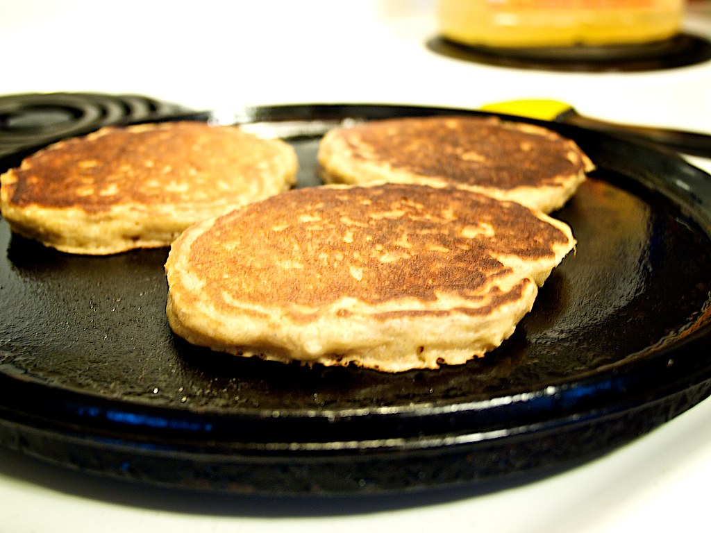

Pancakes

Description
Perfect pancakes are easier to make than you think. This pancake recipe produces thick, fluffy, and all-around delicious pancakes with just a few ingredients that are probably already in your kitchen (and it's so much better than the boxed stuff).
Ingredients
1 1/2 cups flour
3 1/2 tsp baking powder
1 tbsp white sugar
1/4 tsp salt
1 1/4 cups milk
3 tbsp melted butter
1 egg
Steps
- Sift flour, baking powder, sugar, and salt together in a large bowl.
- Make a well in the center and add milk, melted butter, and egg; mix until smooth.
- Heat a lightly oiled griddle or pan over medium-high heat.
- Pour or scoop the batter onto the griddle, using approximately 1/4 cup for each pancake; cook until bubbles form and the edges are dry, about 2 to 3 minutes. Flip and cook until browned on the other side.
- Repeat with remaining batter.